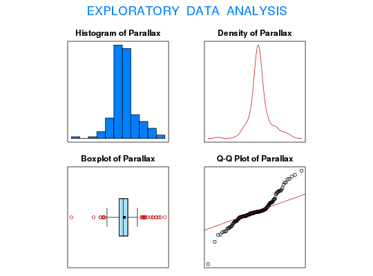

Data for Exercise 6.65
A data frame with 158 observations on the following 10 variables.
Kitchens, L. J. (2003) Basic Statistics and Data Analysis. Duxbury
str(Short)#> 'data.frame': 158 obs. of 10 variables: #> $ Sample.1: num 8.5 8.5 7.33 8.64 9.27 9.06 9.25 9.09 8.5 8.06 ... #> $ Sample.2: num 8.65 8.35 8.71 8.31 8.36 8.58 7.8 7.71 8.3 9.71 ... #> $ Sample.3: num 8.5 8.8 8.4 8.82 9.02 ... #> $ Sample.4: num 8.7 9.66 8.5 8.65 10.33 ... #> $ Sample.5: num 8.43 9.09 8.5 8.44 9.71 8.07 8.36 8.6 9.11 8.66 ... #> $ Sample.6: num 8.63 10.16 8.5 8.31 10.8 ... #> $ Sample.7: num 8.54 8.56 8.54 8.74 8.91 8.4 8.4 8.57 8.69 8.55 ... #> $ Sample.8: num 8.54 8.58 8.54 8.94 9.24 8.3 8.33 8.59 8.81 8.56 ... #> $ Parallax: num 8.5 8.5 7.33 8.64 9.27 9.06 9.25 9.09 8.5 8.06 ... #> $ Sample : int 1 1 1 1 1 1 1 1 1 1 ... #>attach(Short) hist(Parallax)EDA(Parallax)#> [1] "Parallax" #>#> Size (n) Missing Minimum 1st Qu Mean Median TrMean 3rd Qu #> 158.000 0.000 5.760 8.338 8.610 8.550 8.594 8.803 #> Max. Stdev. Var. SE Mean I.Q.R. Range Kurtosis Skewness #> 10.800 0.674 0.455 0.054 0.465 5.040 2.763 0.323 #> SW p-val #> 0.000 #>#> #> One-sample Sign-Test #> #> data: Parallax #> s = 40, p-value = 3.966e-10 #> alternative hypothesis: true median is not equal to 8.798 #> 95 percent confidence interval: #> 8.50 8.58 #> sample estimates: #> median of x #> 8.55 #> #>#> Conf.Level L.E.pt U.E.pt #> Lower Achieved CI 0.9331 8.5 8.58 #> Interpolated CI 0.9500 8.5 8.58 #> Upper Achieved CI 0.9536 8.5 8.58 #>t.test(Parallax,mu=8.798)#> #> One Sample t-test #> #> data: Parallax #> t = -3.5135, df = 157, p-value = 0.000578 #> alternative hypothesis: true mean is not equal to 8.798 #> 95 percent confidence interval: #> 8.503618 8.715496 #> sample estimates: #> mean of x #> 8.609557 #> #>detach(Short)